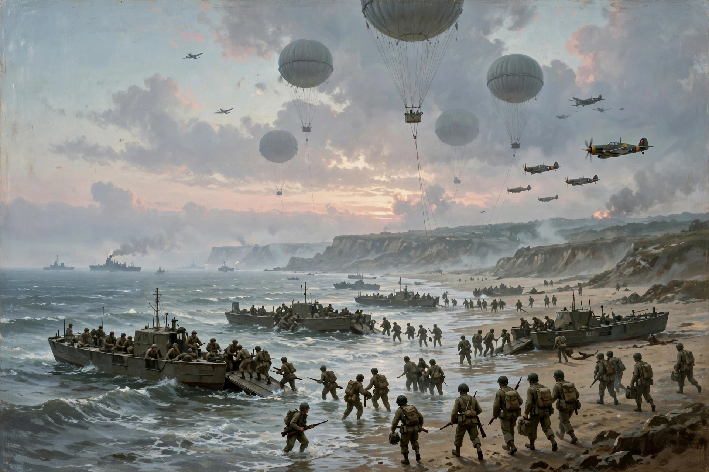

| Battle of Normandy | ||
|---|---|---|
| Part of Operation Overlord, Second World War | ||
| Date | 6 June – 30 August 1944 | |
| Location | Normandy, France | |
| Result | Decisive Allied victory Liberation of Paris; German Army in France largely destroyed | |
| Belligerents | ||
| United States, United Kingdom, Canada, Free France, Poland and other Allies | Germany | |
| Commanders and leaders | ||
| Dwight D. Eisenhower, Bernard Montgomery, Omar Bradley, George S. Patton | Gerd von Rundstedt, Erwin Rommel, Günther von Kluge | |
| Strength | c. 1.5 million troops ashore by late July; 2 million+ by end of battle | c. 640,000+ rotated through Normandy |
| Casualties and losses | c. 225,000 (incl. 37,000+ killed); c. 4,000 tanks, 11,000 aircraft | c. 400,000+ (incl. 200,000+ captured); c. 2,000 tanks, 2,400 aircraft |

The Battle of Normandy — the Allied campaign to liberate Normandy in the summer of 1944, under the umbrella code-name Operation Overlord — began with the Normandy landings (D-Day, 6 June 1944) and ended with the closing of the Falaise pocket and the liberation of Paris in late August. The largest seaborne invasion in history established the Western Allies in France, destroyed much of the German army in the West, and opened the road to the liberation of Western Europe.
On 6 June 1944, after airborne landings on both flanks and a massive naval bombardment, some 156,000 troops landed on five beaches — Utah, Omaha, Gold, Juno and Sword — protected by overwhelming air and sea power and a deception plan (Operation Fortitude) that convinced Hitler the main invasion would come at the Pas-de-Calais. By nightfall the Allies held a lodgement, at a cost of roughly 10,000 casualties, worst at Omaha.
The expected rapid expansion stalled: in the east, Caen — a D-Day objective — held out through repeated offensives (Epsom, Charnwood, Goodwood) into July; in the west, American forces ground through the bocage, the dense hedgerow country of the Cotentin and Bessin, where every field was a strongpoint. Attrition, air supremacy and logistics nevertheless steadily bled the German armies, which Hitler forbade to manoeuvre or withdraw.
Operation Cobra (25 July) shattered the German left near Saint-Lô; Patton's Third Army poured through the Avranches gap into Brittany and then wheeled east in a vast envelopment. A German counter-attack at Mortain failed under Allied air power. British, Canadian and Polish forces driving south from Caen (Operations Totalize and Tractable) met the Americans at the Falaise pocket; the Poles' stand on Mont Ormel (the "Mace") sealed the trap. Something like 10,000 Germans were killed and 40,000–50,000 captured in the pocket, though many escaped across the Seine.
Paris rose in revolt and was liberated on 25 August by Leclerc's French 2nd Armoured Division and the US 4th Infantry Division. By the end of August the Seine was crossed and the Battle of Normandy was over: German losses approached 400,000 men and nearly all their armour in France, a defeat comparable to Stalingrad.
Hastings, Max, Overlord (1984); Beevor, Antony, D-Day (2009).